01. The real problem
Adoption was high. Then it dropped 76%.
Nami Insurance is a decentralized protocol that insures over 100 assets against market fluctuations. In March 2023, the Nami Foundation aimed to integrate it into the Nami Exchange app to assist traders in managing risk.
Before the drop
22.64%
of homepage visitors held a contract, high versus other crypto insurance protocols.
February
−76.09%
monthly contracts versus the previous period.
My hypothesis: awareness and access had dropped, and traders in Vietnam rarely use Web3 wallets, so buying Insurance on a standalone platform was hard.
How might we turn Insurance into a tool that helps Nami Exchange traders manage risk and enhance their trading experience?
Three objectives for the redesign
Integrate Insurance into the Exchange app to lift adoption and revenue.
Help User
Streamline the insurance purchase process for Nami Exchange users actively trading digital assets or futures. Prioritize clear information presentation and simplify payments to minimize confusion and frustration.
Help Nami Insurance
Enhance the appeal of the features by ensuring that the user experience is easily comprehensible and adaptable to different user profiles.
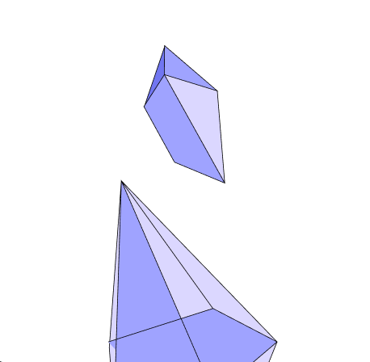
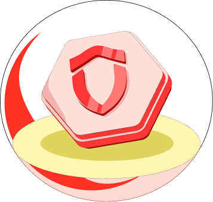
Help Growth
Contribute to overall company growth by optimizing the insurance vertical to become the company's secondary revenue stream, thereby reinforcing the company's value proposition.
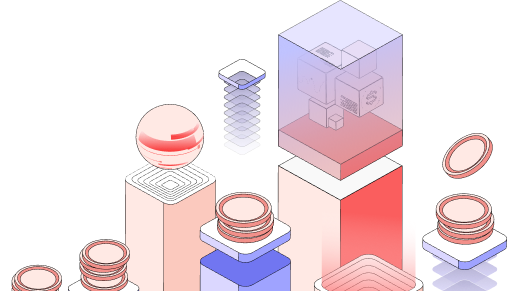
Scope: 90% of Exchange users prefer the app, so I focused on the app.
02. Research
Before designing, I clarified the requirement.
I turned the requirement into discovery questions, then ran in-depth interviews to answer them.
Research, UX design, UI design
Research
I began this project by analyzing the requirements and defining the problem. The research phase validated my initial findings and outlined the next steps.
- Building research plan
- In-depth Interview
- Identify insights by Affinity Mapping Framework
- Identify persona
- Framing the problems and design hypothesis by how might we question.
UX Design
In this phase, research findings informed the development of feature logic and flow. These design choices are central to user-centered design.
- Flow Chart and User Flow
- Information Architecture
- Product Requirement Document (PRD)
UI Design
The second phase focused on constructing the house's architecture, allowing time for decoration and testing.
- Visual Research
- Design System
- User Interface Design
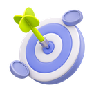
What do traders struggle with when they trade?
Three keywords to clarify
| Keyword | What I needed to learn |
|---|---|
| Traders | Age, demographics, trading experience |
| Behavior and needs | Preferred trading type, goals, frequency, methods |
| Risk | Types, frequency, impact, frustrations, alternatives, satisfaction |
Five traders, three cities
Mobile Exchange users aged 18–40 in Ho Chi Minh City, Ha Noi and Da Nang, with 0 to 3+ years of experience, recruited through the Nami Exchange Facebook group.
Interview objectives
- Identify personas
- Find the risks each persona struggles with
- Find the top risks to solve
- Understand their aspirations
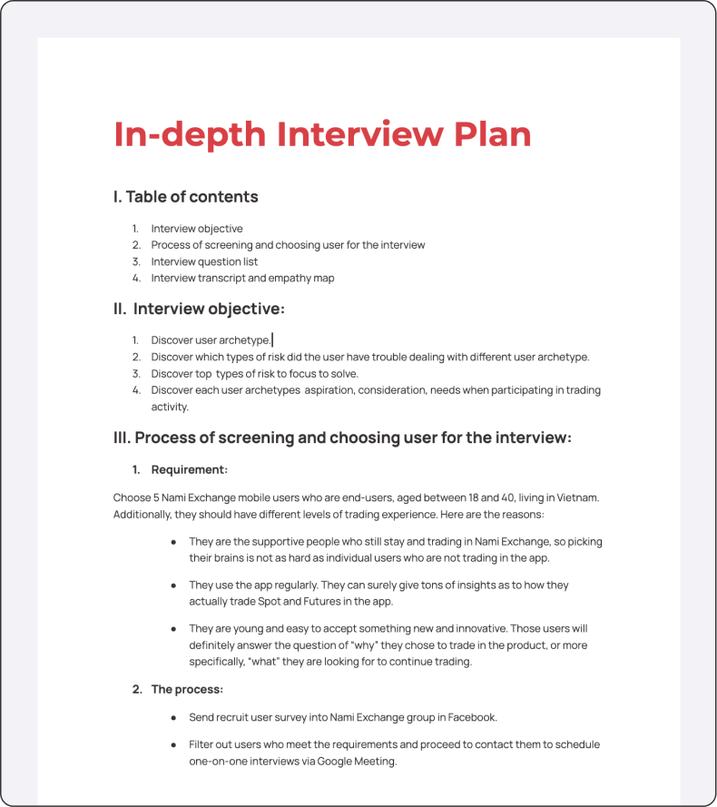
The plan was tailored to gain user’s useful insights. View the Interview plan in detail.
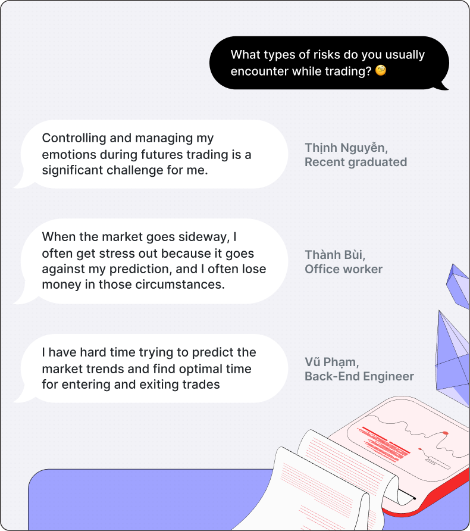
Post-interviews, I found users often struggle with FOMO and inaccurate market predictions.
Two risks stood out: FOMO and false market predictions.
Two risks, six insights
Affinity mapping clustered my interview notes.
Type of risk 01
Users often feel FOMO in both Spot and Futures trading.
Type of risk 02
Users struggle to read market trends, so they miss the best time to enter and exit.
Other highlighted insights were that…
Insight 01
Prioritize fast notifications
Price alerts must arrive within 1–2 seconds in a volatile market.
Insight 02
Don’t use tools effectively
Junior traders pick high-risk tools like Cross mode and skip stop-loss orders.
Insight 03
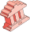
No specific trading plan
They follow instinct or signals from bots and Telegram groups.
Insight 04
Aware of risk tolerance
All traders know their risk tolerance and weigh it carefully.
Insight 05
Focus on flexibility
They want fast, customizable tools that fit their strategy.
Insight 06
Motivated by competition
Events with rewards give them a sense of conquering challenges.
Three archetypes, two focus groups
Archetype 1
Newbie trader
- <1 year
- $0–500 / month
- Aspiration
- Reserve capital and start earning small profits.
- Struggles
- Choosing tools, managing capital, timing entries and exits.
Archetype 2
Part-time trader
- 1–2 years
- $500–1,000 / month
- Aspiration
- Earn consistent profits and go full-time.
- Struggles
- FOMO, building a trading plan, applying varied techniques.
Archetype 3
Professional trader
- 2+ years
- $1,000–2,000 / month
- Aspiration
- Consistently profitable results.
- Struggles
- Syncing information sources and watching the market 24/7.
I focused on newbie and part-time traders. They battle FOMO and struggle to read long-term trends, so they benefit most from Insurance.
Newbie/part-time traders aims to safeguard capital and enhance monthly profit ratios in Spot and Futures trading.
Vũ (30 tuổi)Lập trình viên tại TPHCM
Context
Rapid price swings trigger FOMO, which leads to losses and emotional stress.
Behavior:
- Prefers Futures for fast outcomes.
- Follows Telegram signals and a custom bot.
- Removes stop loss when FOMO hits.
Needs:
- Overcome FOMO.
- A plan or alert tool for his risk tolerance.
- Real-time entry and exit advice.
Pain point:
- Poor capital management.
- Unaware of high-risk tool consequences.
- Can’t predict trends or the best entry and exit point.
Why does FOMO happen?
Desk research on crypto trading psychology showed three root causes.
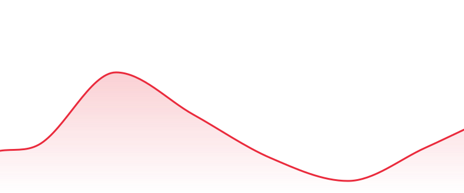
FOMO time
Abusive enter trade
Denial and panic
Doom time
Panic selling
FOMO again
Root cause 01
Inner scarcity and greed
Root cause 02
Social groups & herd behavior
Root cause 03
Market uncertainty
03. The challenge
Two problems to solve for Vũ.
Problem 1:
Vũ often feels FOMO when trading Spot and Futures in Nami Exchange.
Problem 2:
Vũ struggles to read market trends, so he cannot find the best time to enter and exit.
The secondary research reveals three key factors contributing to users' FOMO psychology: 1) Inner scarcity and greed, 2) Herd behavior influenced by social trading groups, and 3) Market uncertainty. From these insights and interview results, I've crafted "How Might We" questions to tackle Vũ's challenges.
Support Vũ overcome scarcity and greed in FOMO time and have a stable, consistent trading mindset?
Motivate Vũ achieve consistent small trading profits in both stable and volatile market conditions?
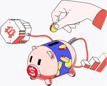
Assist Vũ in improving trading skills and making data-driven investment decisions?
Vũ’s ideal scenario
I placed Vũ in an ideal scenario to extract the minimum features for the MVP.
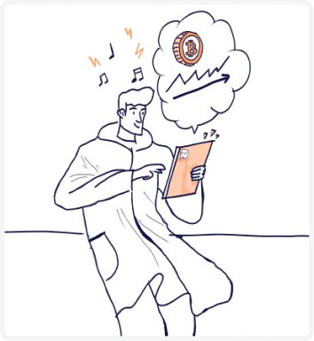
On Saturday, Vũ gets a notification that BTC/USDT prices have risen. Excited, he jumps into Insurance trading.
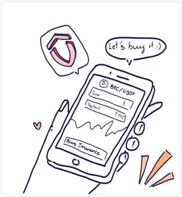
Vũ receives a tailored Insurance plan from Nami Exchange that aligns with his trading style and risk appetite.
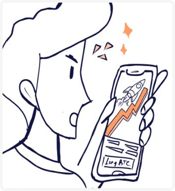
After buying Insurance plans, Vũ sees a significant market surge, prompting him to seek more trading opportunities.
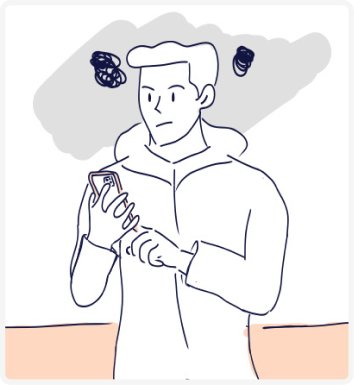
To assess market stability, Vũ decides to analyze trends in detail.
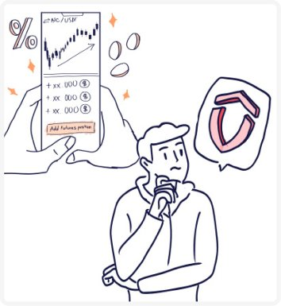
Despite his analysis, Vũ wants to enter Futures trading, knowing his Insurance plans provide a safety net.
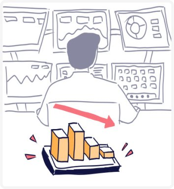
After placing another Futures position, Vũ takes a break from the market.
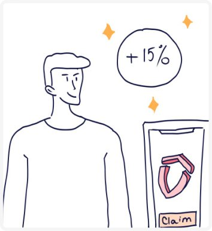
Later, Vũ reviews his trading and notes losses in Futures, but his Insurance contracts provided a small profit.
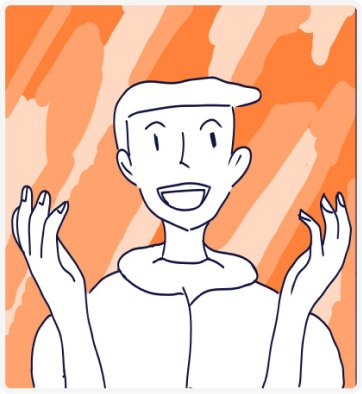
At month’s end, Vũ reflects on his profit growth from Futures and Insurance trading, feeling proud of his progress.
From how-might-we to ideas
To facilitate my generation phase, I further reframed the design requirements into key actionable statements that are broad enough to allow multiple solutions, but narrow enough to set focus.
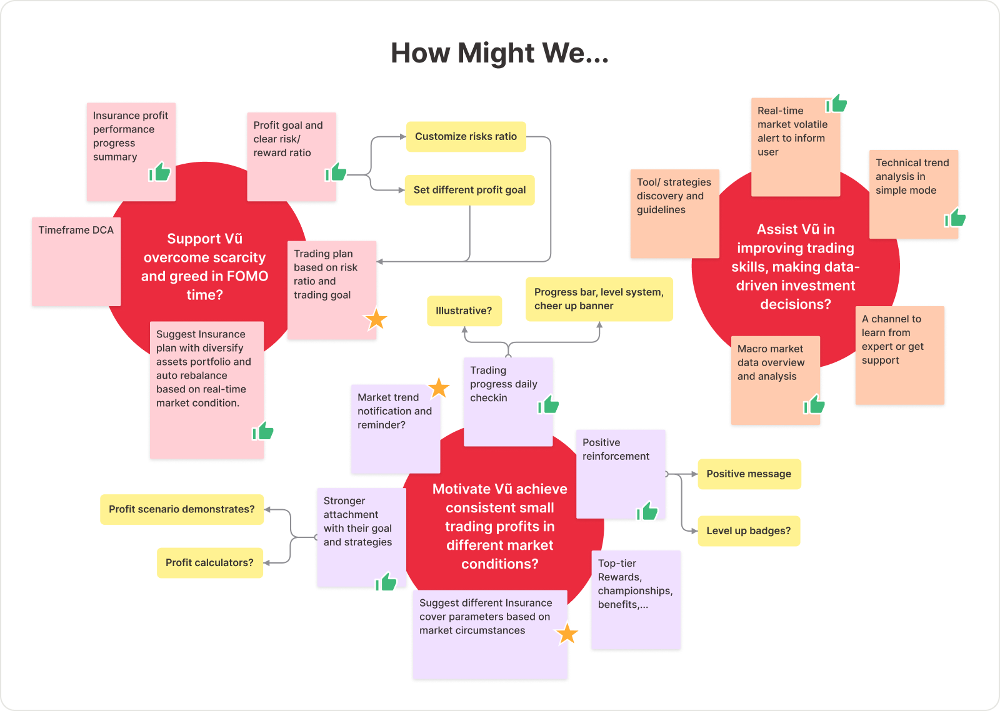
💊 Ideas I developed further
- Profit performance dashboard
- Trading goals and risk/reward ratios
- Trading plan with diversified assets
- Cover parameters by market condition
- Profit scenario when buying Insurance
- Macro market data overview
- Simple technical trend analysis
04. The design
From insight to seven in-app features.
I set three design objectives as my compass.
Objective 01
Visually aesthetic
Clear, beautiful visualization of trading progress keeps users inspired.
Objective 02
Personalization
Customizable tools that fit each trader’s needs and strategy.
Objective 03
Minimalist design
As little time as possible, so trading never feels like a chore.
Overview user flow
I developed the following user flow with the data collected from my research. This user flow was the proof to help us visualize the typical user’s journey, map out key solutions to fit in with the user’s journey and develop wireframes as well as a prototype to test with users later.
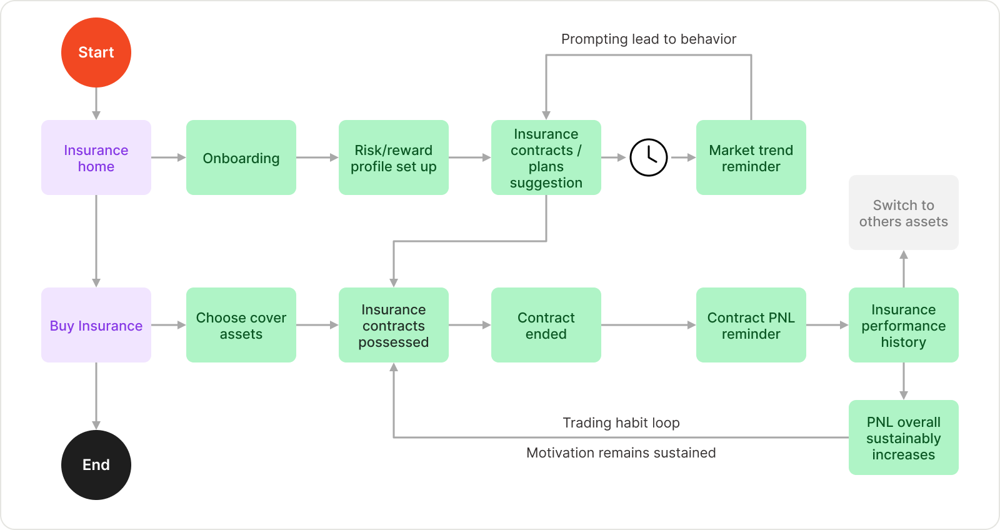
Built on the Nami Design System
Nami Design System is Nami’s source of truth for developers. To ensure consistency between the development and the design sides, we needed to create that system in the language that Designers could understand. Nami Design System is divided into 3 main parts: Foundation, Mobile component, and Web component.
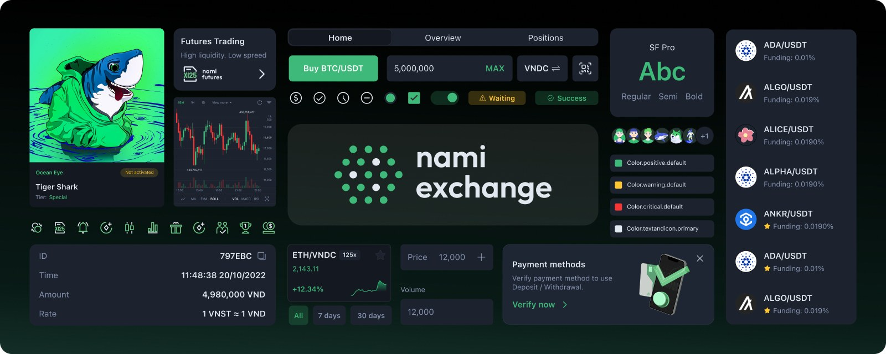
See the Revamp Nami Exchange design system process.
Detailed features
1. Homescreen - The main journey
The main journey: news on how Insurance works, prices of top trading pairs, and contracts matched to your goals.
Flow explanation ↗2. Insurance demonstration
Pick an asset, quantity, duration, margin and claim price, then see the potential profit and return scenarios.
Flow explanation ↗3. Suggested cover parameters
Parameters are suggested from the user’s risk/reward ratio and the market conditions.
Flow explanation ↗4. Customize an Insurance contract
AI Strategy picks the most optimal package; Manual mode lets users tune every parameter.
Flow explanation ↗6. Market and macro data
Browse 30+ covered assets and track macro trends to time a bull or bear contract.
Flow explanation ↗05. Reflection
What I learned
01. A clear product roadmap is crucial.
Without a broader vision we rushed, reasoned weakly and reacted instead of planning.
02. Test, test, test!
We under-invested in usability testing and relied on assumptions about users.